Characterizing and Mitigating Language Sensitivity in Vision-Language-Action Models
Vision-language-action models (VLAs) are strikingly sensitive to instruction phrasing and do not inherit the language robustness of the vision-language models they are built on. A one-word edit can move success by tens of points: π0.5 turns on a LIBERO stove 100% of the time for “switch on the stove” and 2% for “switch on the hot plate”, and a π0 checkpoint finetuned with rephrase augmentation still shows swings of up to 61 points. We characterize this sensitivity with statistically tested single-edit swings and an oracle phrase search, which shows that phrasing alone nearly closes the 21-point gap between in-distribution and out-of-distribution tasks. We then reduce it without modifying the policy. Because the sensitivity is systematic, it can be expressed as explicit rules: we score many phrasings of a few training tasks, have a large language model distill the evidence into ten to twenty rephrasing rules, and at deployment rewrite each incoming instruction once under these rules. The rules improve the frozen π0 by 16 to 27% relative on twelve held-out tasks across adversarial, VLM-generated, and human-generated phrasings, with gains concentrated on out-of-distribution tasks. The pipeline replicates on π0.5 and LIBERO, lifting in-finetune success from 93.6% to 97.8%. The method requires no retraining and no per-step verification, and applies zero-shot to unseen tasks and instructions.
A vision-language-action model (VLA) is a robot controller. It looks at a camera image, reads a short written instruction such as “put the carrot on the plate”, and moves the robot arm. VLAs are built on top of vision-language models, the same kind of model behind chat assistants that can look at pictures, so you might expect them to understand an instruction however it is worded. Often they do not. Changing one word, without changing the meaning, can turn a task the robot almost always gets right into one it almost always gets wrong. Three examples, measured on the same scenes with the same random seeds, so the wording is the only difference:
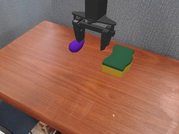
69% “purple eggplant goes on the sponge” vs. 8% “eggplant goes on the sponge”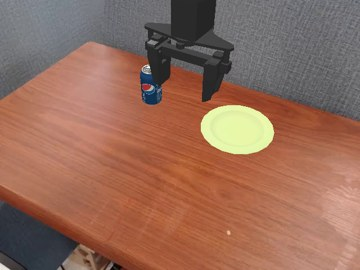
69% “put the pepsi on the plate” vs. 25% “put the Pepsi on the plate”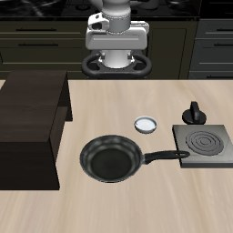
100% “fire up the stove” vs. 6% “turn on the stove”Throughout, a task is one thing the robot is asked to do in one scene, and the success rate is the share of attempts in which it finished. We study two recent VLAs, π0 and π0.5, on two standard simulated test beds of tabletop tasks, Bridge and LIBERO.
We measure the sensitivity in two ways: single-edit swings, pairs of instructions that differ by one edit, and oracles, the best instruction we can find for each task.
A single-edit swing is a pair of instructions that differ by a single edit, one word or even one capital letter, where the success rate changes by more than chance can explain. Below, videos of eleven of them, replayed side by side. The percentages on the title card are the measured rates from the full evaluation, so a replay can differ from them by a box or two.
The chart below shows the biggest swing we found for each task and each kind of edit, such as changing a noun, adding a color, or swapping the verb. Each row is one task. The dots are the success rates of the wordings in that set, the filled dot is the best wording, and the number on the right is the gap between the best and the worst, in percentage points. Every row passed a statistical test, and we omit single-edit swings which could be attributed to scene-based ambiguity. The full lists of wordings are in the code repository (Bridge, LIBERO).
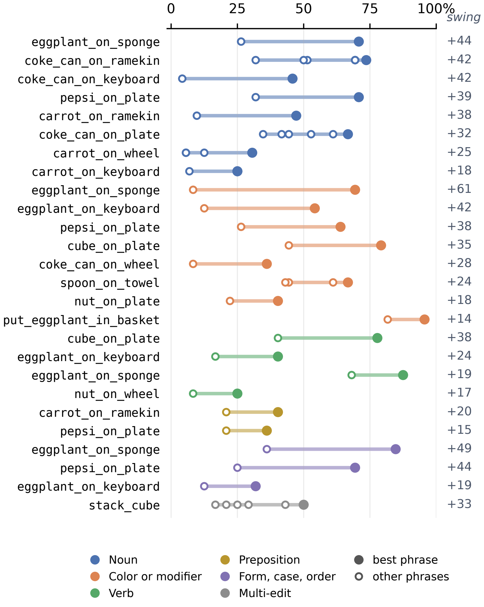
π0 on Bridge: 26 sets over 16 tasks, 72 attempts per wording.
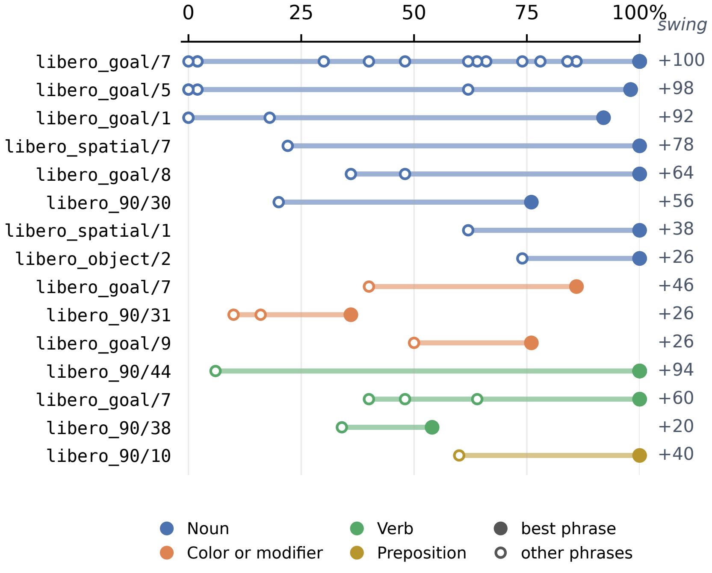
π0.5 on LIBERO: 15 sets over 13 tasks, 50 attempts per wording.
The second measurement: for each task we search for the best wording we can find, which we call the task’s oracle instruction, and compare it with the other ways the task can be worded. The search is simple. A vision-language model proposes 16 rephrasings, the robot tries each one many times, and the next round of proposals sees the scores so far; after three rounds we keep the best. The oracle is then re-measured on fresh attempts so that luck in the search does not inflate it.
The instruction groups we compare, which come up again in the results:
This gives another measure of language sensitivity: how much higher the success rate is with the oracle instruction than with the other groups of instructions, such as the natural or adversarial ones.
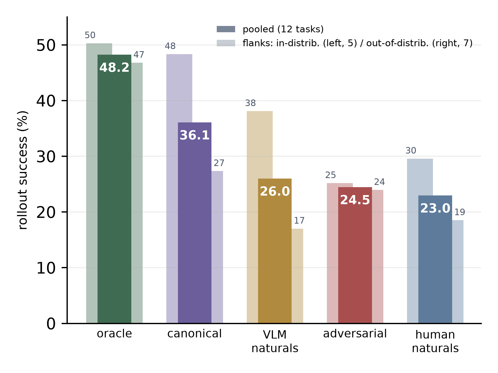
π0 on 12 held-out Bridge tasks, 24 scenes each. The wide bar pools all 12 tasks; the thin bars split them into tasks whose object names appear in the training instructions (left, 5 tasks, “in-distribution”) and tasks whose names do not (right, 7, “out-of-distribution”). With the canonical wording the two groups are 21 points apart; with the oracle wording, 3 points. Much of what looks like a generalization gap is a wording gap.
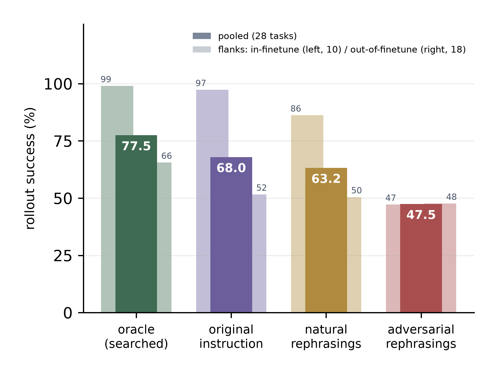
π0.5 on 28 LIBERO tasks, 50 scenes each. Thin bars: tasks the model was trained on (left, 10) and tasks it was not (right, 18). On trained tasks, adversarial wording drops success from 97% to 47%. On tasks that are not in the training set, the wording barely matters (52, 50, and 48%), yet the oracle still finds headroom in both (99% and 66%).
A common and effective fix is rephrase augmentation: during training, each demonstration is labeled with several different wordings, so the model sees more variety. The π0 we study was trained this way, and it helps: on the human-written instructions in the chart below, it is worth about 2 points. But as the examples above show, large swings remain. We build on top of that fix with a method that changes nothing inside the robot’s model; it is explained in the next section. The chart below compares the two in one setting, human-written instructions with Claude as the applier, the model that rewrites each instruction: what rephrase augmentation buys, and what our method adds on top.
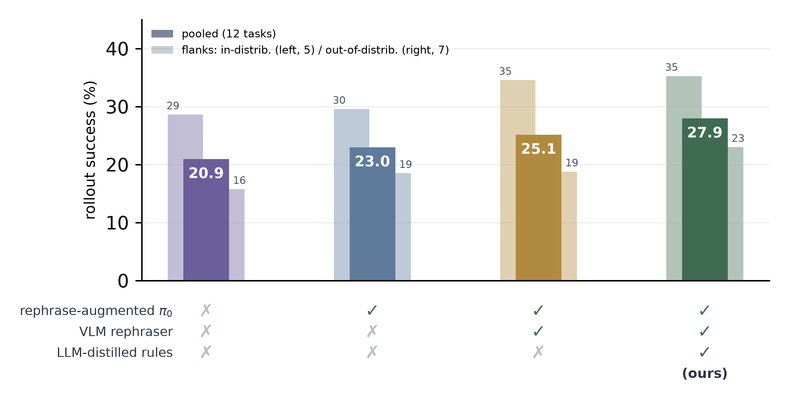
Success on the 363 human-written instructions for the 12 held-out Bridge tasks, 24 scenes each. Left to right: π0 trained without rephrase augmentation; π0 trained with it; adding an applier, a vision-language model that rewrites each instruction, with no rules; adding our distilled rules. Thin bars are the in-distribution (left) and out-of-distribution (right) tasks. The rules bar is the average over three rulebooks.
Our key observation is that the sensitivity is systematic rather than random. The same kinds of wording help or hurt across many tasks, so the pattern can be written down as rules. The method has three steps:
The robot’s model is never changed, nothing runs while the robot moves, and because the rules describe how the robot reads language in general, they carry over to tasks it has never seen.
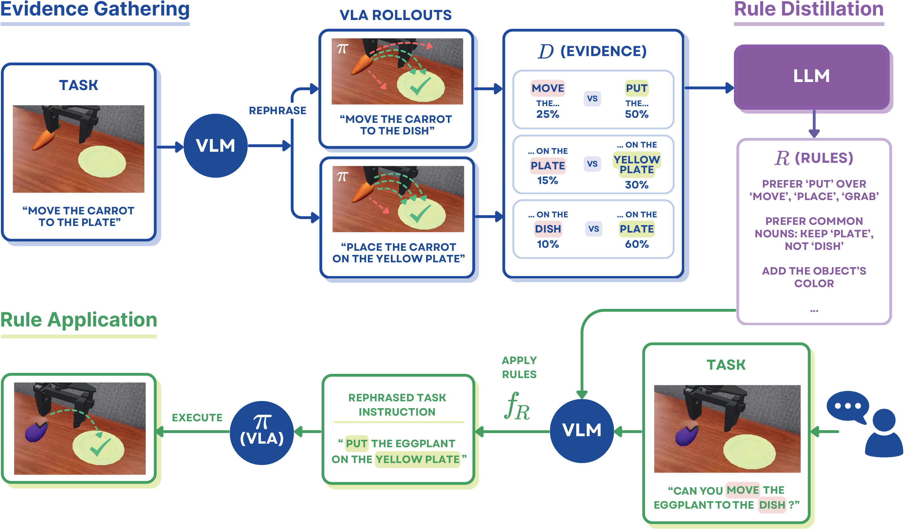
The three steps. The instructions, scores, and rules shown in this figure are illustrative, not from our experiments.
A few of the distilled rules:
Bridge rulebook
“Name every object by the shortest common word an ordinary person would use: the everyday name, never a description, riddle, or category phrase.”
Bridge rulebook
“‘onto’ becomes ‘on’, ‘into’ becomes ‘in’.”
Bridge rulebook
“Never replace a specific name with a broader class or packaging word (‘ketchup’ must not become ‘sauce’ or ‘bottle’).”
LIBERO rulebook
“Write a bare lowercase imperative: strip ‘can you’, ‘could you’, ‘would you’, ‘please’, ‘just’ and ‘go ahead and’.”
LIBERO rulebook
“Name the outcome, never the mechanism: no knob, handle, button or switch.”
LIBERO rulebook
“The landmark is what tells the robot which of several similar objects to pick. Never drop it, generalise it, or replace it.”
LIBERO rulebook
“When it is not clear which object a word refers to, keep the word as it came: the robot tolerates most paraphrase, but a wrong referent costs the whole task.”
To test on instructions that real people would actually write, we ran a survey. Each respondent watched a short looping video of the robot doing a task and typed how they would ask for it, once as if asking an 8-year-old, once an adult, and once a robot. They never saw the original instruction. 37 people aged 11 to 85 took part, with familiarity with AI ranging from none to professional. After dropping a few blank or incomplete entries and duplicates, this gave 363 unique instructions, kept exactly as typed, typos included. Below is one task as respondents saw it.
One of the 12 survey tasks
A live copy of one survey item; nothing typed here is sent anywhere. The full survey, with every task clip, is also available as a replica.
We test on π0 with 12 held-out Bridge tasks that contributed no evidence, 24 scenes each. Three different models serve as the applier: Claude Fable 5, Gemini (the gemini-pro-latest model as of September 2026), and Qwen3.5-9B, an open-weights model that runs on a local GPU.
The rules come in three kinds of rulebook, which differ only in the evidence the rule-writer saw:
Each kind was distilled three times and the results averaged. Every applier and rulebook is tested on the four instruction groups defined above: adversarial, VLM-written natural, human-written natural, and canonical.
What we found. Rulebooks built from out-of-finetune evidence are the best kind on every group except canonical. They improve the unmodified robot by 16 to 27% relative on the adversarial and natural groups, depending on the applier, and most of that gain comes on out-of-distribution tasks. The result is stable across the three appliers and three independent distillations.
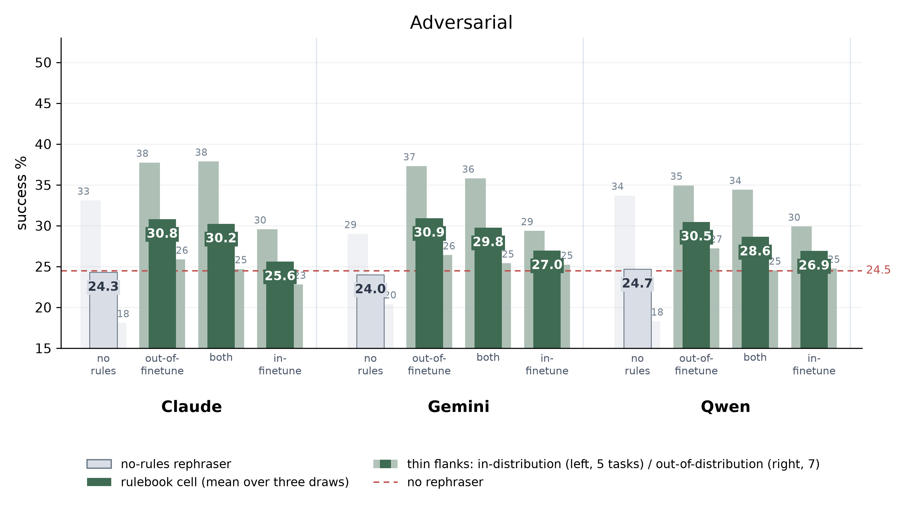
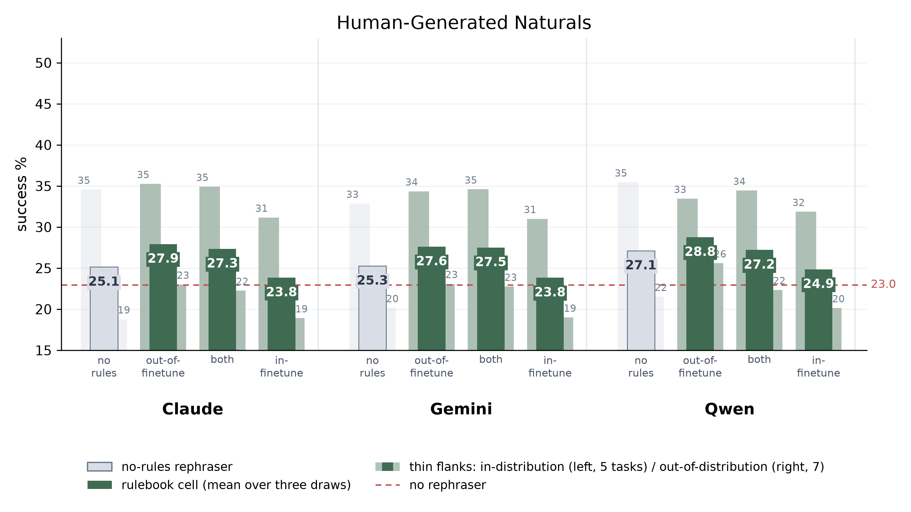
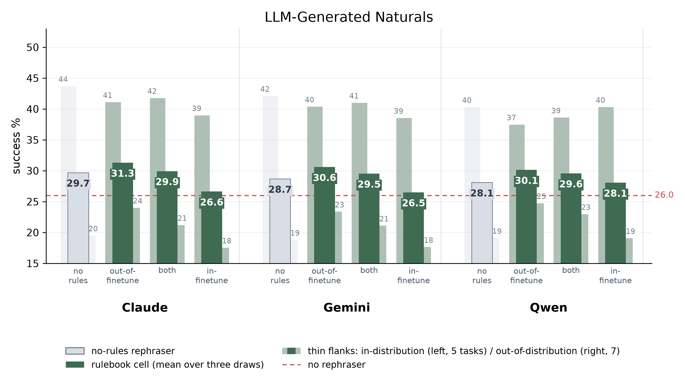
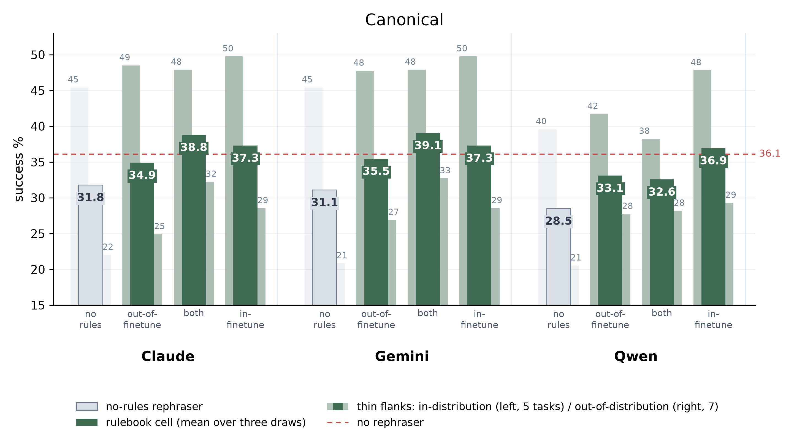
Four charts, one per instruction group; within each, one bar group per applier. Dashed red line: the unmodified robot. Grey bar: the applier with no rules. Green bars: the out-of-finetune, both, and in-finetune rulebooks, each averaged over three draws. Thin bars to either side: in-distribution (left, 5 tasks) and out-of-distribution (right, 7). The canonical chart has one instruction per task, so it is noisy and should be read with caution.
To check that this is not a one-model result, we repeated the whole pipeline on π0.5 and LIBERO: a fresh sealed set of 20 tasks, 10 that the model was trained on and 10 it was not, with 10 natural rephrasings per task written by Gemini, evidence from single-edit pairs on other tasks only, Gemini as the applier, and three independently distilled rulebooks. On the trained tasks the rulebooks lift success from 93.6% to 97.8%, and all three land on the same two fixes: write “stove” instead of “hot plate” or “burner”, and “plate” instead of “dish”. On the 10 tasks it was not trained on, none of the three rulebooks changes success measurably (−0.5 to +0.3 points, p ≥ 0.47), which matches the oracle chart above: on tasks it was not trained on, π0.5 barely reacts to the wording.
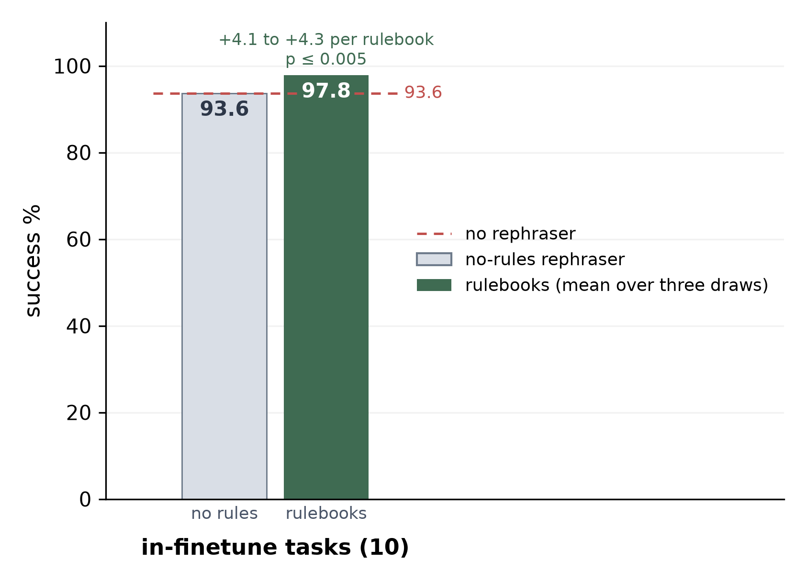
π0.5 on the 10 sealed LIBERO tasks inside its training set: 100 natural rephrasings written by a vision-language model (Gemini, gemini-pro-latest), 50 scenes each, Gemini as the applier. Dashed red: the unmodified robot. Grey: the applier with no rules. Green: the rulebooks, averaged over three draws. Each of the three rulebooks gains 4.1 to 4.3 points (p ≤ 0.005, paired permutation test over the 100 base instructions); the no-rules applier gains 0.1 (p = 0.87). The 10 out-of-finetune tasks are not charted: there the rulebooks differ from the unmodified robot by −0.5 to +0.3 points (p ≥ 0.47) and the no-rules applier gains 1.6 (p = 0.006).
@misc{watts2026rephrase,
title = {Rephrase Before You Act: Characterizing and Mitigating
Language Sensitivity in Vision-Language-Action Models},
author = {Watts, Mikey and Cui, Yuchen},
year = {2026},
note = {Under review},
url = {https://sttawm.github.io/rephrase-before-you-act/}
}